Kyphi: Szenen und Gegenstände
Teil 1 · Hintergründe ohne Gegenstände, darüber die Ebenen. Häkchen schalten Ebenen ein und aus. Daten: catalog.json, Herkunft: provenance.json.
Martins Wohnung scenes/wohnung/ · 1344×768
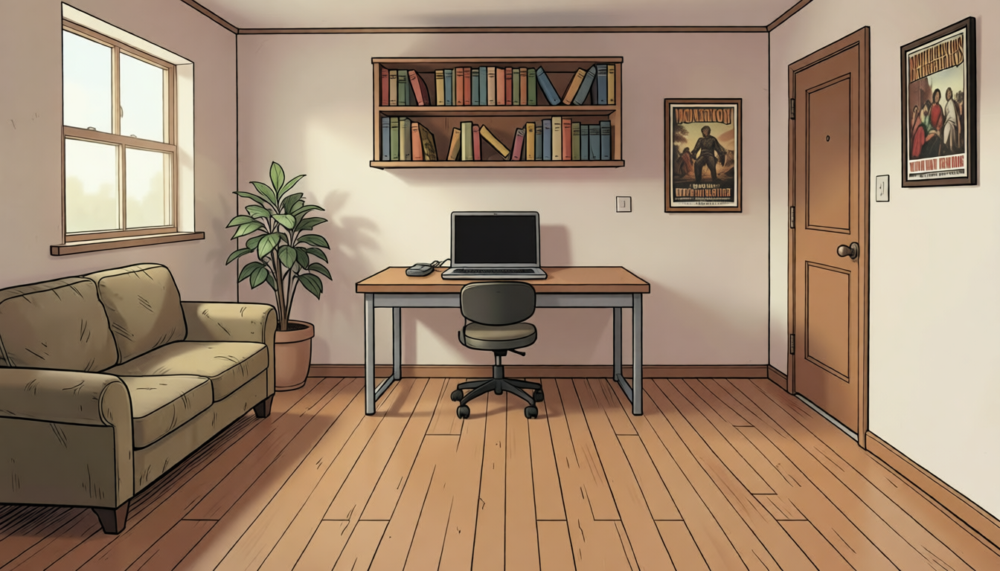
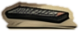
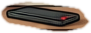
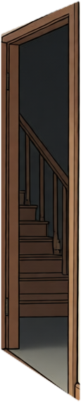
Lobby scenes/lobby/ · 2048×576
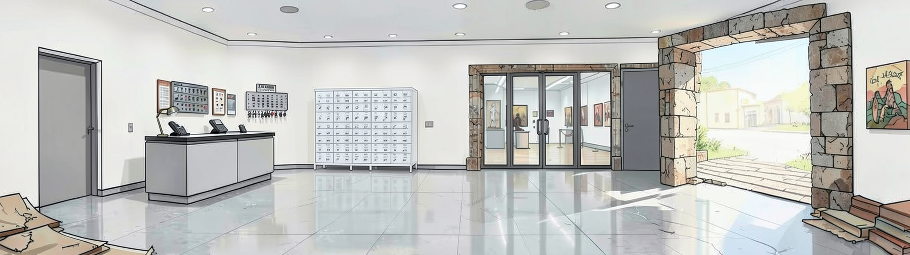
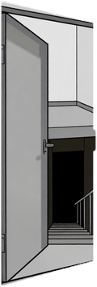
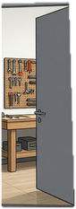
Werkstatt scenes/werkstatt/ · 1344×768
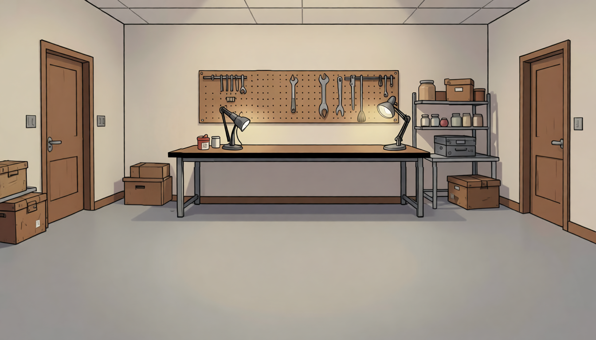
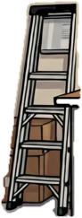
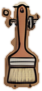
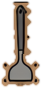
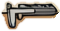
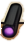
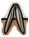
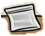
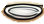
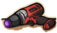
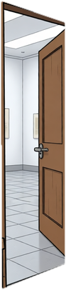
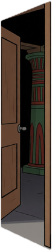
Altarraum scenes/altarraum/ · 2048×576
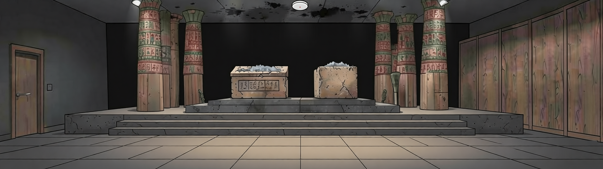
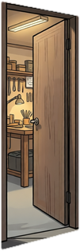
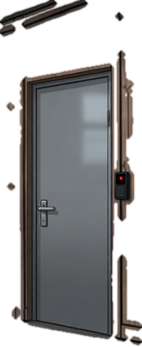
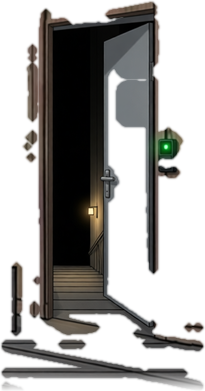
Keller mit Depot scenes/depot/ · 2048×576
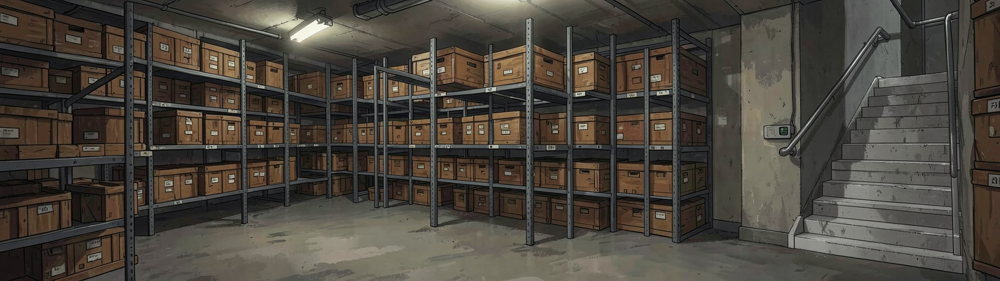
Keine Ebenen.
Gegenstände (26 Inventar-Icons)
512×512 PNG mit Transparenz, dazu je eine 128×128-Fassung (_128.png).
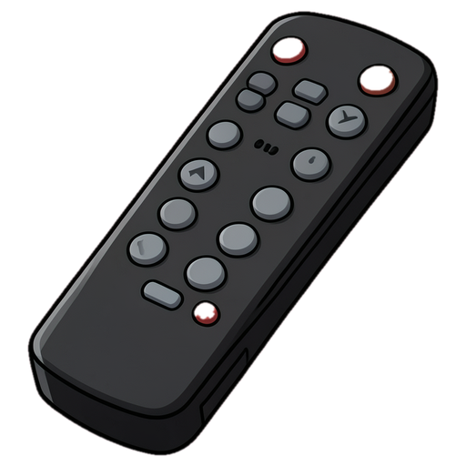
Fernbedienung
items/remote.png- Fundort
- Sofa (Wohnung)
- Verwendung
- Batterien herausnehmen
- Herkunft
- flux2-klein, Seed 401, Job de06294e9a85
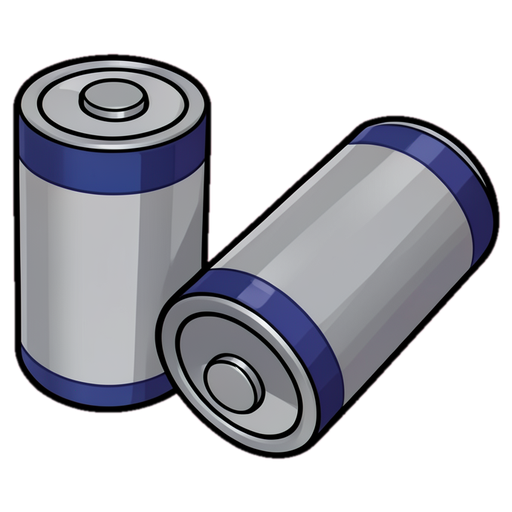
Batterien
items/batteries.png- Fundort
- aus der Fernbedienung
- Verwendung
- Diktiergerät in Betrieb nehmen
- Herkunft
- flux2-klein, Seed 100, Job 606bb5a79d32
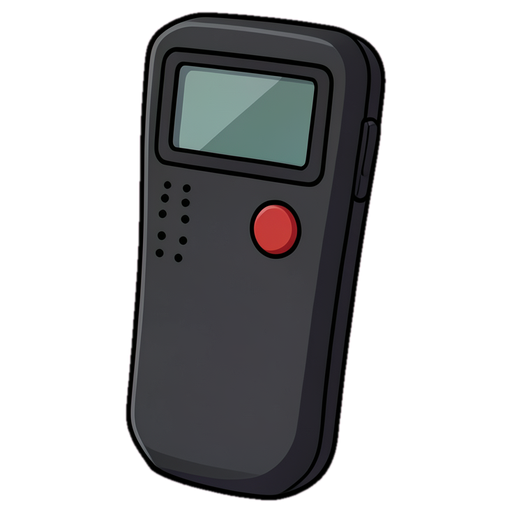
Diktiergerät
items/dictaphone.png- Fundort
- Schreibtisch (Wohnung)
- Verwendung
- Aufnahme im Altarraum (VOX)
- Herkunft
- flux2-klein, Seed 101, Job 15f22b3d6b23
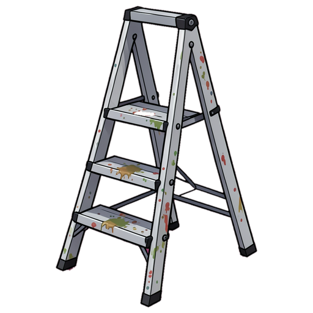
Malerleiter
items/ladder.png- Fundort
- Werkstatt, Ecke links
- Verwendung
- Rauchmelder, Ruß von der Decke
- Herkunft
- flux2-klein, Seed 101, Job e78b0c9f3fc6
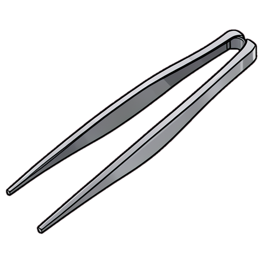
Pinzette
items/tweezers.png- Fundort
- Werkbank
- Verwendung
- Graues Haar sichern
- Herkunft
- flux2-klein, Seed 702, Job 87dc05a2d925
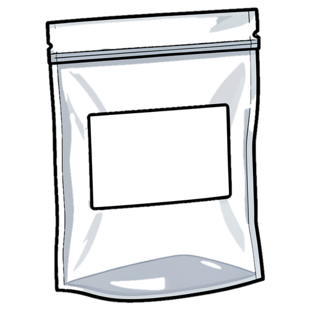
Fundtütchen
items/evidence_bag.png- Fundort
- Werkbank
- Verwendung
- Graues Haar sichern
- Herkunft
- flux2-klein, Seed 301, Job 5617ab183b42
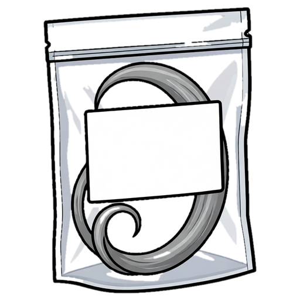
Fundtütchen mit Haar
items/evidence_bag_hair.png- Fundort
- Rauchmelder (Altarraum)
- Verwendung
- Spur für Teil 2
- Herkunft
- qwen-image-edit, Seed 300, Job ae8e9f38271b
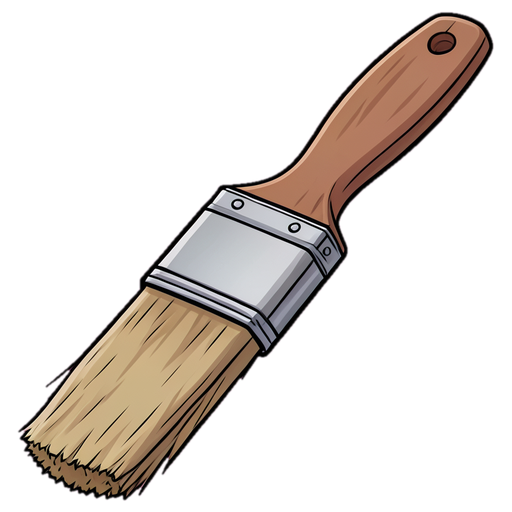
Pinsel
items/brush.png- Fundort
- Lochwand (Werkstatt)
- Verwendung
- mit Ruß kombinieren
- Herkunft
- flux2-klein, Seed 101, Job 07455740f298
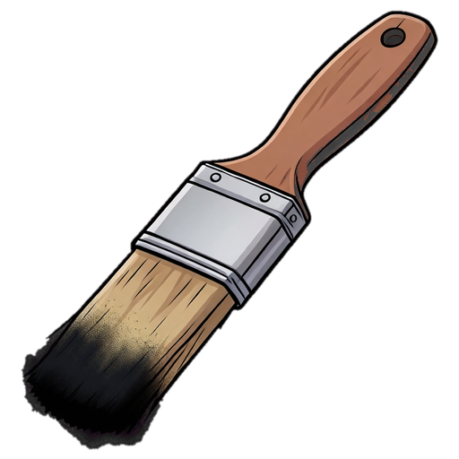
Pinsel mit Ruß
items/brush_soot.png- Fundort
- Pinsel + Ruß
- Verwendung
- auf Karteikarte „Holtz“
- Herkunft
- qwen-image-edit, Seed 301, Job 9d8b34a73d16
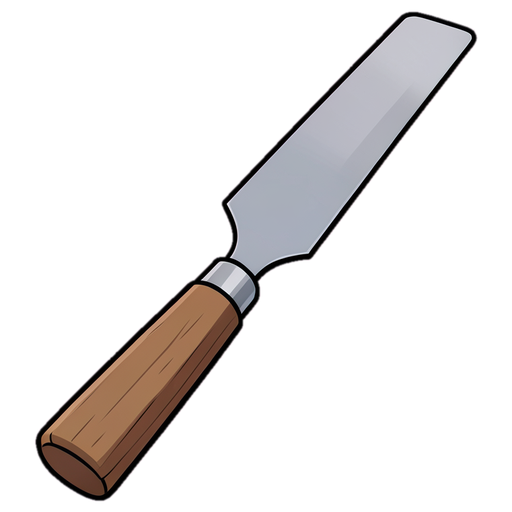
Spatel
items/spatula.png- Fundort
- Lochwand (Werkstatt)
- Verwendung
- Ruß, doppelter Boden, Holzzapfen
- Herkunft
- flux2-klein, Seed 101, Job b604f289383a
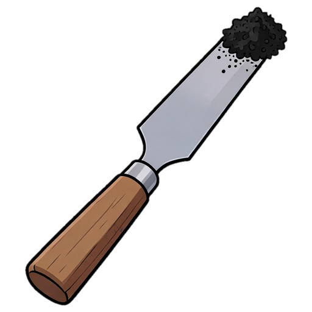
Spatel mit Ruß
items/spatula_soot.png- Fundort
- Leiter + Spatel an der Altarraum-Decke
- Verwendung
- mit Pinsel kombinieren
- Herkunft
- qwen-image-edit, Seed 300, Job 647ba5f9dcc7
Karteikarte „Holtz“
items/index_card.png- Fundort
- Archivkartei (Lobby)
- Verwendung
- Druckspuren sichtbar machen
- Herkunft
- flux2-klein, Seed 301, Job 3ae0adabfed1
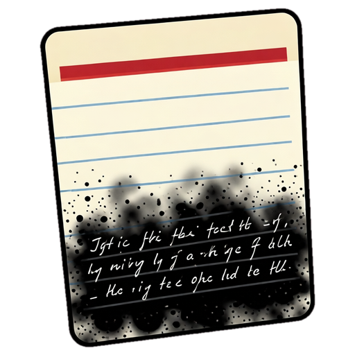
Karteikarte mit Druckschrift
items/index_card_revealed.png- Fundort
- Rußpinsel auf Karte
- Verwendung
- ergibt D-0912
- Herkunft
- qwen-image-edit, Seed 301, Job f9a57ccfad1e
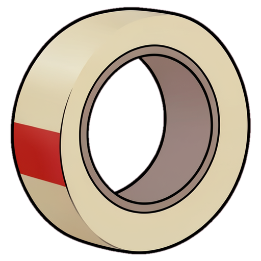
Kreppband
items/masking_tape.png- Fundort
- Werkbank
- Verwendung
- Lichtschalter im Depot, Rauchmelder
- Herkunft
- flux2-klein, Seed 100, Job 2de28ea4f516
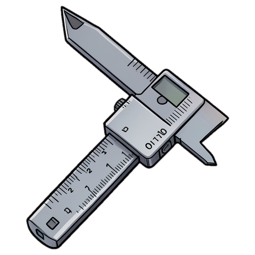
Messschieber
items/caliper.png- Fundort
- Werkbank
- Verwendung
- Kiste ausmessen
- Herkunft
- flux2-klein, Seed 101, Job 124b6b367b42
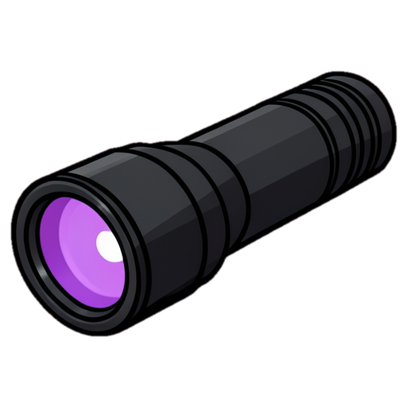
UV-Lampe
items/uv_lamp.png- Fundort
- Werkbank
- Verwendung
- Licht im Depot, neue Zapfen erkennen
- Herkunft
- flux2-klein, Seed 100, Job 70eb4bba1a5b
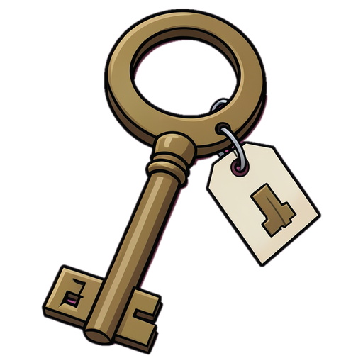
Depotschlüssel
items/depot_key.png- Fundort
- Frau Ackermann
- Verwendung
- Depot öffnen, zurückgeben
- Herkunft
- flux2-klein, Seed 101, Job e77621a33f79
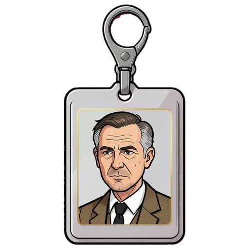
Mitarbeiterausweis
items/id_card.png- Fundort
- Hollmanns Kiste
- Verwendung
- Stahltür öffnen
- Herkunft
- qwen-image-edit, Seed 301, Job 62ea476df4fd
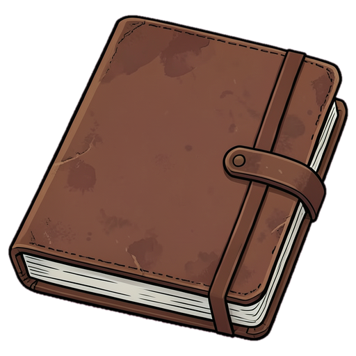
Notizbuch
items/notebook.png- Fundort
- Hollmanns Kiste
- Verwendung
- Hinweis auf die Westwand
- Herkunft
- flux2-klein, Seed 101, Job 9da7af88e963
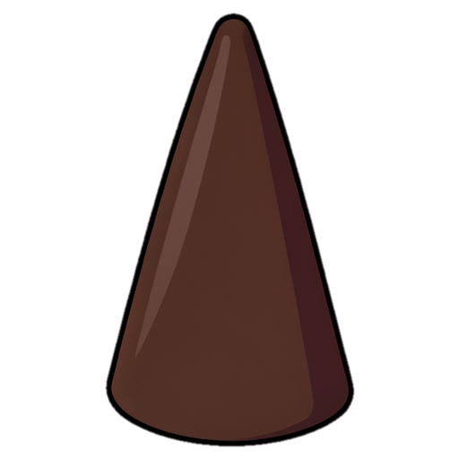
Räucherkegel
items/incense_cone.png- Fundort
- Hollmanns Kiste
- Verwendung
- Frau Ackermann geben, Rauchprobe
- Herkunft
- flux2-klein, Seed 100, Job 577fc719a8f0
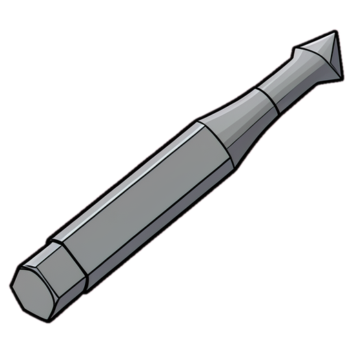
Schrauberbit (Dreikant)
items/screw_bit.png- Fundort
- Hollmanns Kiste
- Verwendung
- mit Akkuschrauber kombinieren
- Herkunft
- flux2-klein, Seed 803, Job 92398f32f5c6
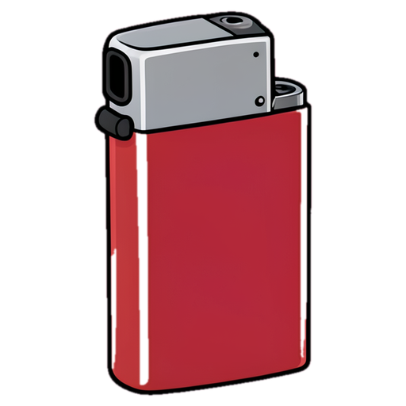
Feuerzeug
items/lighter.png- Fundort
- Frau Ackermann (gegen Räucherkegel)
- Verwendung
- Räucherkegel anzünden
- Herkunft
- flux2-klein, Seed 100, Job 4825471a9271
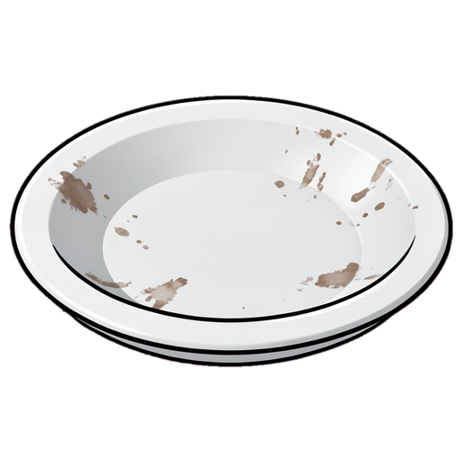
Untertasse
items/saucer.png- Fundort
- Werkbank
- Verwendung
- Kegel an der Wand entlangtragen
- Herkunft
- flux2-klein, Seed 100, Job 26e60676d91f
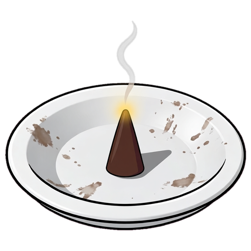
Brennender Kegel auf Untertasse
items/cone_saucer.png- Fundort
- Kegel + Untertasse + Feuerzeug
- Verwendung
- Luftzug an Paneel 4 finden
- Herkunft
- qwen-image-edit, Seed 301, Job 6926a09a0d53
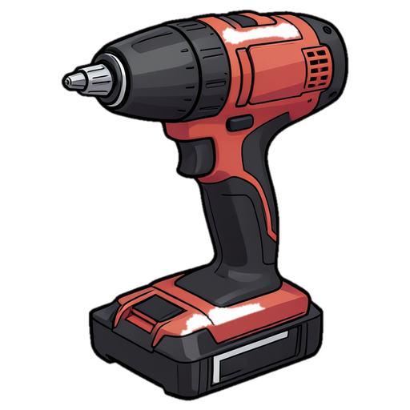
Akkuschrauber
items/drill.png- Fundort
- Werkbank
- Verwendung
- mit Bit kombinieren
- Herkunft
- flux2-klein, Seed 101, Job 454c77fae850
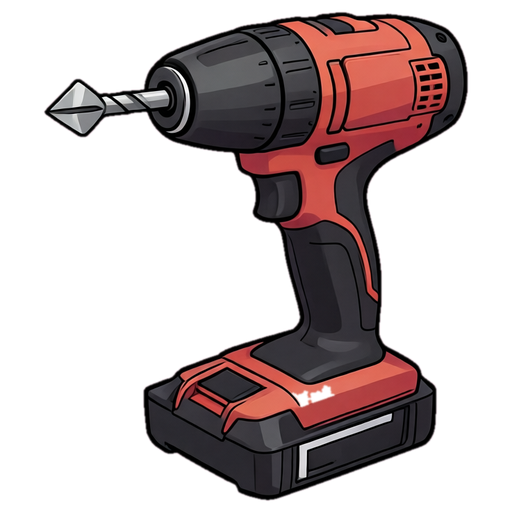
Akkuschrauber mit Bit
items/drill_bit.png- Fundort
- Akkuschrauber + Bit
- Verwendung
- Schrauben an Paneel 4 lösen
- Herkunft
- qwen-image-edit, Seed 301, Job 88e14ca96da6